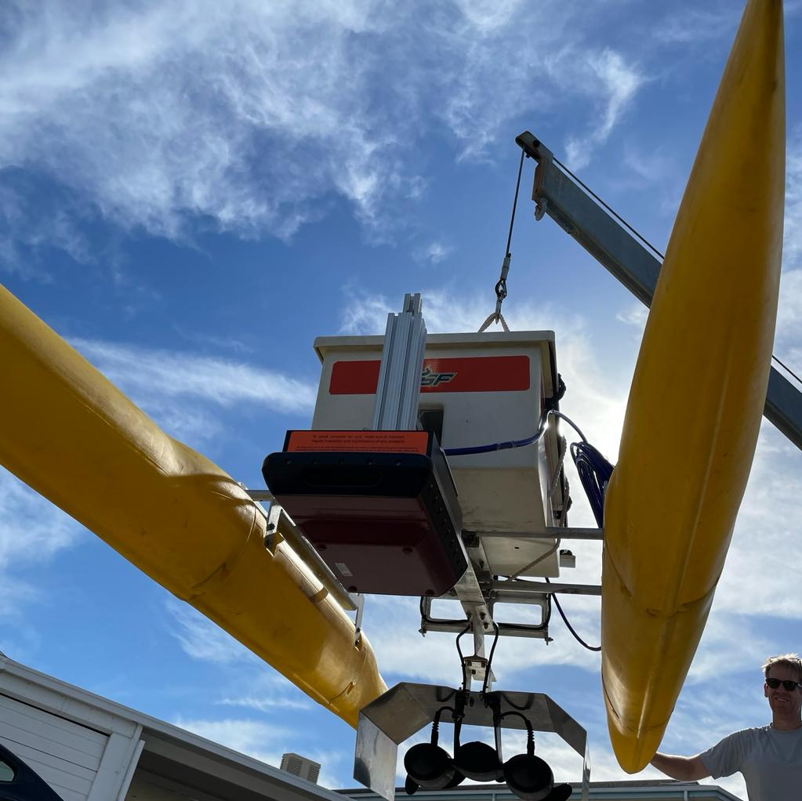

About
Installation
The Trevor ASV software leverages the CCOM project 11 repository for autonomoy features. At this time, Project 11 is only offered as a ROS1 Package Therefore, we will need to create 2 ROS worspaces and a bridge workspace to make it work. Fortunately, we provide you with pre-configured repositories to do this with minimal fuss!
- let's begin by cloning the workspaces. For this example I assume you are creating them in a
~/ros/ directory
Get all the source code
On the control laptop...
- the first repo we need is the ROS2 workspace for trevor things
git clone --recurse-submodules https://github.com/USF-COMIT/trevor_ws.git
- next let's get the project11 related stuff
git clone --recurse-submodules https://github.com/USF-COMIT/trevor_project11_ws.git
- finally, grab the project 11 bridge to link everything together
git clone --recurse-submodules https://github.com/USF-COMIT/project11_bridge.git
- now get all the dependencies. Note that because we are on foxy we need ot use a special rosdep update command
rosdep update --include-eol-distros
rosdep install --from-paths trevor_ws/src --ignore-src -r -y
rosdep install --from-paths trevor_project11_ws/src --ignore-src -r -y
rosdep install --from-paths project11_bridge/ros1_ws/src --ignore-src -r -y
rosdep install --from-paths project11_bridge/ros1_ws/src --ignore-src -r -y
Compile
each package has its own compile script for your convenience. Just run each one!
~/ros/trevor_ws/build.sh
~/ros/trevor_project11_ws/build.sh
~/ros/project11_bridge/build.sh
Getting Started
Credits
This package was created by Dr. Kristopher Krasnosky and Jaden Crute of the USF COMIT group and offered under the Apache 2.0 License.